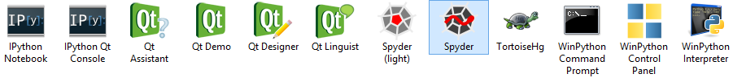
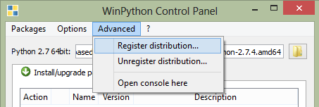

Since
December 2013,
WinPython is hosted at
SourceForge.net:
see the
download
page, the
Wiki
pages,
Tickets,
and
other
integrated tools.
Latest News
Released on December 2013:
Overview
WinPython is a free open-source portable
distribution of the Python
programming language for Windows XP/7/8, designed for scientists,
supporting both 32bit and 64bit versions of Python 2 and Python 3.

It is a full-featured (see what's
inside WinPython
2.7 or WinPython
3.3) Python-based scientific environment:
- Designed for scientists (thanks to the
integrated libraries NumPy, SciPy, Matplotlib,
guiqwt, etc.):
- Regular scientific users:
interactive data processing and visualization using Python with Spyder
- Advanced scientific users and
software developers:
Python applications development with Spyder,
version control with Mercurial and other development tools (like
gettext, etc.)
- Portable: preconfigured, it
should run out of
the box on any machine under Windows (without
any requirement) and the folder containing WinPython can
be moved to any location (local, network or removable drive) with most
of the application settings
- Flexible: one can install (or
should I write "use" as it's portable) as many WinPython versions as
necessary (like isolated and self-consistent environments), even if
those versions are running different versions of Python (2.7, 3.x in
the near future) or different architectures (32bit or 64bit) on the
same machine
- Customizable:
- The integrated package manager (wppm, as
WinPython Package Manager) helps installing, uninstalling or upgrading
Python packages (see WPPM wiki page
for more details on supported package formats)
- As WPPM may not
support some packages, it's also possible to install or upgrade
packages using easy_install or pip from the
WinPython command prompt
- A configuration file allows to set environment
variables at runtime
WinPython vs. Python(x,y): WinPython is
not an
attempt to
replace Python(x,y),
this is just something different (see motivation and
concept): more flexible, easier to maintain, movable and less
invasive for the OS, but certainly less user-friendly, with less
packages/contents and without any integration to Windows explorer.
Portable
or
not, the choice is yours!
WinPython is a portable application, so the user
should
not
expect
any integration into Windows explorer during installation.
However, the WinPython
Control Panel allows to "register" your distribution to Windows
(see screenshot below).

Registering your WinPython installation will:
- associate file extensions .py, .pyc
and .pyo
to Python interpreter
- register Python icons in Windows explorer
- add context menu entries Edit with IDLE
and Edit
with Spyder for .py files
- register WinPython as a standard Python
distribution
(standard
Python Windows installers will see WinPython in Windows registry)
That is exactly what the official Python installer would do to your
machine: in other words, you can have it both ways!